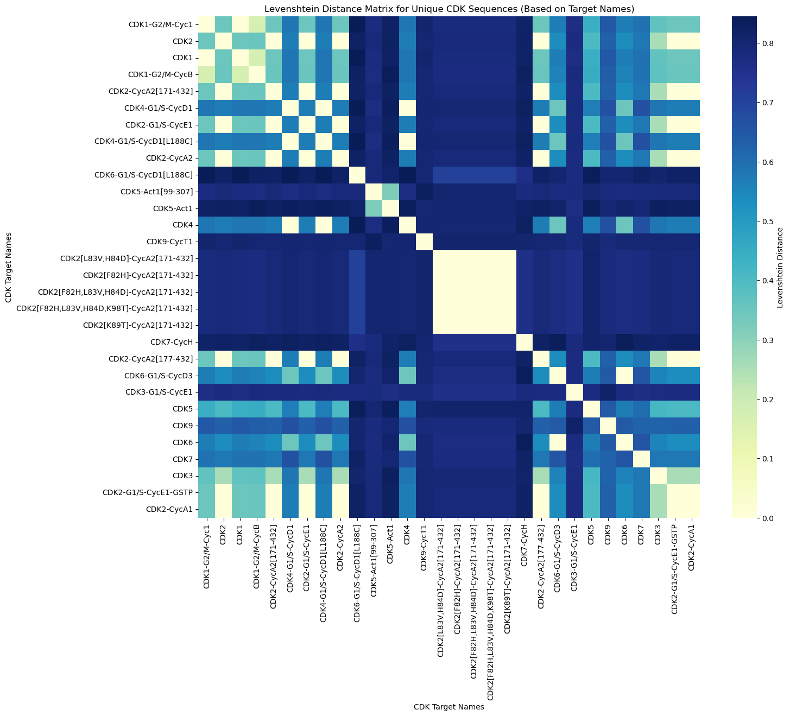

Everyone wants to find a cure for cancer
Exploring the role of CDKs in Cell Proliferation
Globally, 1 in 6 people die from cancer. Despite their differences, all cancers share a common hallmark: uncontrolled cell proliferation. But what exactly is cell proliferation?
In healthy cells, division occurs through mitosis, producing two new cells. In cancer cells, however, the division becomes abnormally fast and uncontrolled, leading to the formation of a mass of cells: the tumor.
Could we find a treatment to prevent the tumor? First let’s take a look at what drives normal cell division. Cells divide in a tightly regulated process known as the cell cycle. It consists of four distinct phases, each governed by specific enzymes, the cyclin-dependent kinases (CDKs). For instance, a CDK, when bound to a specific cyclin, forms an activated complex. This complex ensures the transition from a phase to another.
But in the case of cancers, the complex is overactivated!
It could be an idea to prevent this and cure cancers! Could we find an inhibitor?
This inhibitor could target the cyclin-dependent kinase and reduce its catalytic activity. The inactivated complex wouldn’t be able to ensure the phase switch anymore.
Research question
To find this amazing cure, it’s essential to start with applied data analysis.
Could we find potential inhibitors of CDKs?
To answer this research question, we found interaction measures between CDKs and many different ligands and, more precisely, ligands that might inhibit CDKs.

We can visualize all the CDKs as blue spheres and the ligands they interact with as orange dots. The grey lines connecting them indicate the availability of affinity measurements for each molecule pair. The more connections a particular CDK has, the larger the size of its corresponding blue sphere. From this plot, it is evident that our data is heterogeneous: we have abundant information for some CDKs, while considerably less is available for others.
Let’s study these interactions and let’s find a cure for cancer!
CDKs: Can we sort them by families?
To find potential inhibitors of CDKs functions, we first need to know more about these kinases. In our database, we have 30 different CDKs and for each, the amino-acid sequences of their chains. Are they all different enough that every potential ligand would bind differently to each CDK? Or do they have similarities that could allow us to classify them into families? Indeed, we can imagine that CDKs with similar sequences would have a similar interaction profile with their ligands. Admitting this hypothesis, we could conclude that ligands having a strong interaction with a given CDK would also have a significant interaction with CDKs of the same family.
Moreover, we could also make the hypothesis that CDKs with similar sequences (CDKs within the same family) have similar functions in the cell cycle. This assumption would allow us to find an inhibitor targeting several CDKs and therefore inhibiting a given step of the cell cycle.
The most obvious thing we could do to create these families, is to look at the amino acid sequences of the 30 CDKs.
To do so, we compare the amino acid sequences by aligning their conserved regions. This can be done by Multiple Sequence Alignment, a method biologically accurate, which inserts gaps into the sequences to align them correctly taking into account their evolutionary and structural homology.

How do the CDKs bind to their ligands?
By studying the interactions between ligands and CDKs, we are interested in finding ligands inhibiting the CDKs strongly.
To achieve this, we classify the interaction strength between the ligands and their CDKs, using the IC50 values — the concentration of an inhibitor that reduces the enzymatic activity of the CDK by 50%. We qualitatively sort these values into 3 classes based on scientific literature: strong, moderate, and weak.

The heatmap first confirms the heterogeneity of the data. Some ligands' interactions have been measured with only some CDKs but not all. Paradoxically, some of the CDKs show homogeneous data: only strong interaction or only weak interaction, for instance.
Therefore, in some cases, it will not be possible to compare the ligand/CDKs interactions. But let’s look into the interaction profiles of CDKs with similar data.
Do CDKs of the same family have a similar interaction profile with their ligands? Let’s compare two CDKs and assess the similarity.

This map reveals that the 2 interaction arrays are 86.07% similar! This supports our hypothesis that CDKs within the same family can exhibit similar interaction profiles. Consequently, a specific ligand may potentially bind with comparable strength to multiple CDKs belonging to that family.
Now that we studied the targets for our potential drug against cancer, let's focus on the inhibitor itself: the ligand.
The only information we have on the ligands' nature is their SMILES giving structural information about the molecule. We aim to determine whether ligands with high affinity for a CDK share common structural features. Identifying such patterns would significantly advance our progress in developing an effective inhibitor.
To investigate similarities between SMILES's ligands, we compare their Tanimoto similarity coefficients. You will find more about Tanimoto following this link. Here are two plots showing the SMILES similarities between ligands that bind strongly to CDK2.


We can qualitatively see a very low similarity; only 2.43% of the ligands are more than 85% similar in structure. Unfortunately, comparing all the ligands as a control gives us a close value of similarity of 2.18%. We can therefore not admit that there are more similarities in the SMILES of ligands having the same types of interaction.
We can conclude that it is not significant enough to consider the SMILES similarities as a criterion to conclude on the inhibition property of the ligand.
In order to find a potential inhibitor for the CDKs, we want to build a prediction model which would give us the affinity of a random molecule with a given CDK. For this purpose we have constructed a QSAR model based on linear regression. In short the model takes the SMILES of a ligand, vectorizes it and makes use of these vectorizations as features (X) with the dependent variable being the IC50 values (Y).
A model is created for each CDK. Let’s compare one of these models with a shuffled model to see if it is performing better.

Amazing we have created a model that can predict affinity scores of a ligand on a specific protein! But how good our models are at predicting. Let’s look closer to their R2 values.

Sorting CDKs by Families
To design effective inhibitors, we need to better understand CDKs by grouping them into families. CDKs with similar amino acid sequences are likely to have similar interaction profiles with their ligands. This means that a molecule designed to inhibit one CDK might also inhibit other members of the same family.
Additionally, CDKs within the same family may share similar functions in the cell cycle. This insight could guide the development of inhibitors capable of targeting multiple CDKs, effectively shutting down key steps in cell cycle progression.
The most straightforward way to group CDKs into families is by analyzing their amino acid sequences. By comparing these sequences, we can determine which CDKs are closely related and which are distinct.
One way to measure the similarity between CDK sequences is through the Levenshtein distance. This metric calculates the minimum number of single-character edits (insertions, deletions, or substitutions) needed to transform one sequence into another, like the demo shows. Essentially, the smaller the distance, the more similar the sequences.
For instance, we hypothesize that CDKs with similar names, such as CDK2-CycA2 and CDK2-G1/S-CycE1, may also have similar sequences and therefore belong to the same family. By analyzing the Levenshtein distance between these sequences, we can test this hypothesis and begin to group CDKs into meaningful families.

Cell Cycle Overview
The cell cycle consists of four distinct phases, each governed by specific enzymes. The main ones are the cyclin-dependent kinases (CDKs). For example, CDK2, when bound to cyclin B, ensures the transition from the S phase to the G2 phase of the cycle.
enzymes
CDKs are critical regulators of the cell cycle. Disrupting the CDK/cyclin complex can potentially halt uncontrolled proliferation.
disruption
Globally, 1 in 6 people die from cancer. Despite their differences, all cancers share a common hallmark: uncontrolled cell proliferation. But what exactly is cell proliferation?
In healthy cells, division occurs through mitosis, producing two new cells in a tightly regulated process known as the cell cycle. This cycle involves a series of intricate biochemical reactions. In cancer cells, however, the cell cycle becomes abnormally fast and uncontrolled, leading to the formation of a mass of cells known as a tumor.
But what if we could disrupt this cycle and halt cell proliferation in cancer patients?
To explore this possibility, we need to delve deeper into the cell cycle. It consists of four distinct phases, each governed by specific enzymes, the main ones being the cyclin-dependent kinases (CDKs). For instance, CDK2, when bound to cyclin B, activates it and ensures the transition from the S phase to the G2 phase of the cycle.
Could we find inhibitors that could target the CDKs/cyclin complex and therefore reduce the catalytic activity of involved in this anarchic cell proliferation? Find molecules that could bind to a CDKs, therefore reducing its catalytic activity.
Research Question
Could we find potential inhibitors of CDK activity from new ligands using BindingDB?
study-cdks
Globally, 1 in 6 people die from cancer. Despite their differences, all cancers share a common hallmark: uncontrolled cell proliferation. But what exactly is cell proliferation?
In healthy cells, division occurs through mitosis, producing two new cells in a tightly regulated process known as the cell cycle. This cycle involves a series of intricate biochemical reactions. In cancer cells, however, the cell cycle becomes abnormally fast and uncontrolled, leading to the formation of a mass of cells known as a tumor.
But what if we could disrupt this cycle and halt cell proliferation in cancer patients?
To explore this possibility, we need to delve deeper into the cell cycle. It consists of four distinct phases, each governed by specific enzymes, the main ones being the cyclin-dependent kinases (CDKs). For instance, CDK2, when bound to cyclin B, activates it and ensures the transition from the S phase to the G2 phase of the cycle.
Could we find inhibitors that could target the CDKs/cyclin complex and therefore reduce the catalytic activity of involved in this anarchic cell proliferation? Find molecules that could bind to a CDKs, therefore reducing its catalytic activity.
dna-sequence
Globally, 1 in 6 people die from cancer. Despite their differences, all cancers share a common hallmark: uncontrolled cell proliferation. But what exactly is cell proliferation?
In healthy cells, division occurs through mitosis, producing two new cells in a tightly regulated process known as the cell cycle. This cycle involves a series of intricate biochemical reactions. In cancer cells, however, the cell cycle becomes abnormally fast and uncontrolled, leading to the formation of a mass of cells known as a tumor.
But what if we could disrupt this cycle and halt cell proliferation in cancer patients?
To explore this possibility, we need to delve deeper into the cell cycle. It consists of four distinct phases, each governed by specific enzymes, the main ones being the cyclin-dependent kinases (CDKs). For instance, CDK2, when bound to cyclin B, activates it and ensures the transition from the S phase to the G2 phase of the cycle.
Could we find inhibitors that could target the CDKs/cyclin complex and therefore reduce the catalytic activity of involved in this anarchic cell proliferation? Find molecules that could bind to a CDKs, therefore reducing its catalytic activity.
visual-rep
Globally, 1 in 6 people die from cancer. Despite their differences, all cancers share a common hallmark: uncontrolled cell proliferation. But what exactly is cell proliferation?
In healthy cells, division occurs through mitosis, producing two new cells in a tightly regulated process known as the cell cycle. This cycle involves a series of intricate biochemical reactions. In cancer cells, however, the cell cycle becomes abnormally fast and uncontrolled, leading to the formation of a mass of cells known as a tumor.
But what if we could disrupt this cycle and halt cell proliferation in cancer patients?
To explore this possibility, we need to delve deeper into the cell cycle. It consists of four distinct phases, each governed by specific enzymes, the main ones being the cyclin-dependent kinases (CDKs). For instance, CDK2, when bound to cyclin B, activates it and ensures the transition from the S phase to the G2 phase of the cycle.
Could we find inhibitors that could target the CDKs/cyclin complex and therefore reduce the catalytic activity of involved in this anarchic cell proliferation? Find molecules that could bind to a CDKs, therefore reducing its catalytic activity.
Study of Ligands
We now study the ligands that bind to CDKs. Do ligands with high affinity share structural patterns?